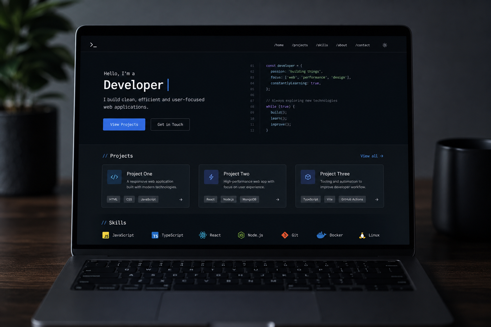

← Retour aux projets
Accueil (thème sombre)
Portfolio BTS SIO SLAM
Front statique sur GitHub Pages (HTML/CSS/JS vanilla). Un module blog / articles avec gestion des utilisateurs tourne sur VPS : base de données, authentification et API pour publier régulièrement du contenu.
Architecture
- Pages statiques + données projets dans
js/projects-data.js. - Configuration externalisée (
js/site-config.js) pour les liens VPS. - Back-office distant : articles, rôles, API REST (hors dépôt GitHub).
Aperçu
